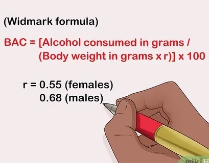
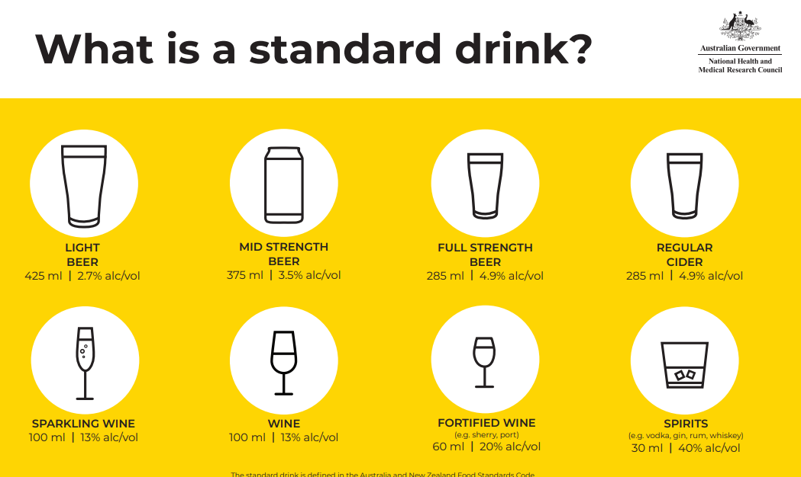

Frequently Asked Questions (FAQs)
What is BAC?
Blood Alcohol Content (BAC) is a measure of the concentration of alcohol in your bloodstream. It's crucial because it helps determine your level of impairment and the legal limits for driving. Understanding your BAC can prevent accidents and legal issues associated with alcohol consumption.

How does the BAC calculator work, and is it accurate?
Our BAC calculator uses a formula based on scientific research to estimate your BAC. It considers factors like sex, weight, quantity of alcohol, and time since your last drink. While it provides a close estimate, please note that actual BAC may vary based on individual factors. Be aware of your local authority's legal BAC limit before driving.
Responsible Drinking Tips:
1. Know your limits: Understand how alcohol affects you personally and drink within those limits.
2. Pace yourself: Consume alcohol slowly and alternate with non-alcoholic beverages.
3. Plan ahead: Arrange for a designated driver or alternative transportation if you plan to drink. Don't drink and drive.
